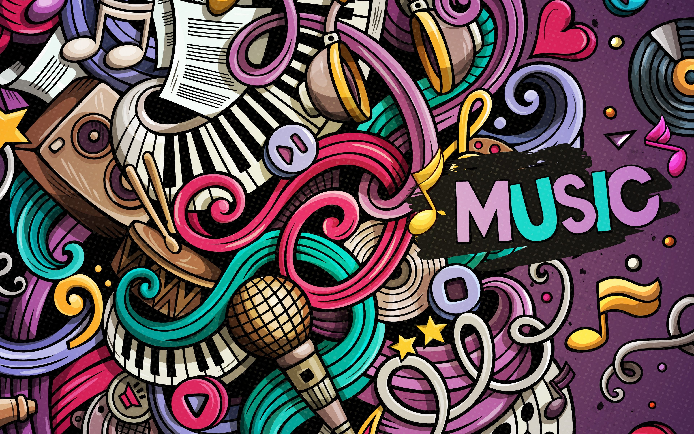

LATA MANGESHKAR

MOHAMMED RAFI
Common freinds lets sing together read slowly the scrolling lyrics
Music is something that we all enjoy in the course of our lives. It is the sound that is brought together through a harmony of instruments and singing voices. It is something that is part of us ever since we enter this world. Our mothers, fathers and grandparents sing us lullabies so that we can sleep peacefully. In the mornings, we listen to the birds chirping and the leaves of plants and trees rustling, and even this is like music to our ears. Music is everywhere, and all you have to do is open up your ears to hear it. Those who know how to create music using instruments and their own bodies are called musicians. There are different kinds of instruments – percussion, string, brass, woodwind and piano/keyboard. Percussion instruments include drums, bongos, the triangle, tambourine, tabla, dholak, etc. and they are the ones responsible for giving the main beat to a song. String instruments include the harp, guitar, cello, violin, etc. and they give rhythm to the music.

The earliest traditions of Indian music can be traced back to the Vedas which prescribed pitch and accent for the chanting of Vedic hymns. The earliest known treatise of Indian music, dance and drama is as old as second century B.C. This is Bharata’s Natyashastra. Much of the musical terminology used till today is derived from Bharata’s treatise. The concept of raga was discussed at great length in Matanga’s Brihaddesi. A 13th century work Sarangadeva’s Sangita-ratnakara mentions 264 ragas. Indian music, both vocal and instrumental, developed with seven basic notes and five others. A variety of string, wind and drum instruments were later developed. Many rulers themselves were well known musicians. We can see Samudragupta’s coin in which the King himself is shown playing on the Vina. Music was also associated with the worship of gods and goddesses.
There many legendary singer in our country who given there incredible contributions to our country .With there performance they had won our hearts .
GOLDEN ERA

S.JANAKI

S.CHITRA

SHANKAR MAHADEVAN
There are still many people who entertained with there performance our simple words cannot describe there roles and service to our country in there respective roles.
This is an era where these generation people were not able take a flavour of there talent and also there may be some people who were me and intermediate of this and that past era too . As i am too the same person we may listen to there songs and we love but we are not of that thats the real fact.
As we are familiar with the new genearation people .In next page will see them.